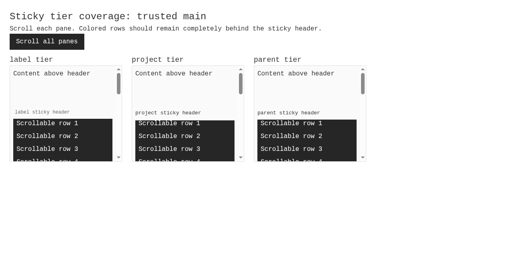
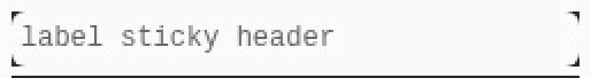
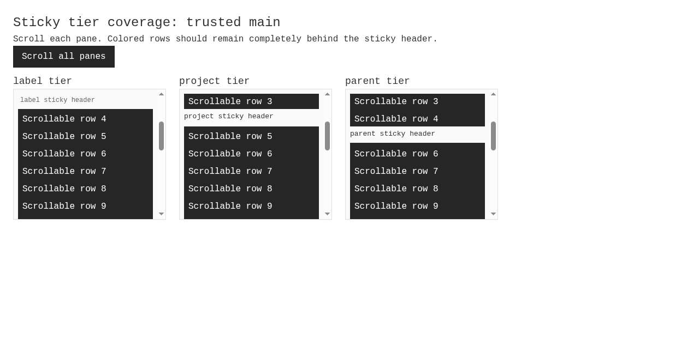

#5208 · Sticky tier backgrounds leave rounded-corner gaps
Verdict: REPRODUCED · Root-cause confidence: high · Reproduction label: confirmed-repro
1. TL;DR
Sticky thread-list headers should hide rows scrolling behind them. The actual shared header component and application theme instead leave rounded-corner cutouts through which underlying row backgrounds remain visible. All three supported tiers reproduce this in a real Chrome browser, while their centers correctly hide the rows. A second clean checkout gives the same result. Removing only the corner radius in a browser-only diagnostic eliminates the exposure; no production source was changed or linked pull-request code executed.
2. Claims vs findings
| Claim being tested | Status | Evidence |
|---|---|---|
| Scrolled backgrounds show through sticky header corners. | Verified | Both browser runs: corner hit-tests reach underlying rows; centers reach headers. Screenshots show dark corner wedges. |
| Label, project, and parent tiers retain a 6px radius. | Verified | All three computed bottom-left radii are 6px in both trusted checkouts. |
| The existing shields do not cover the interior corner cutouts. | Verified | Theme places shields entirely above and below each tier; browser-only zero-radius control passes. |
| The behavior occurs in the reported full sidebar session. | Not separately exercised | This reproduction mounts the real component and CSS with synthetic, high-contrast rows; no user's runtime data or original screenshot was used. |
3. Environment
- Public repository: get-bb/bb; trusted origin/main and GitHub main both resolve to
f135a001e72942cee9118d2693208ec0725e2f18. - Debian GNU/Linux 12, Node v22.19.0, pnpm 9.15.0, Chrome 155.0.8059.39, local headless Browser Automation plugin.
- Two detached clean worktrees at the same base. Each frozen install and normal
pnpm exec turbo run buildsucceeds: 65 tasks successful. - Loopback fixture ports: 45208 (first checkout) and 45209 (second checkout), verified free before launch. Separate browser sessions and disposable browser profiles; no application server, persistent app data directory, credentials, or providers required.
- Trusted components:
SidebarStickyStack,SidebarStickyTier,SIDEBAR_ROW_BASE_CLASS, and the application's original theme. Rows use the primary theme color only to make exposure legible.
4. Minimal reproduction
- Check out the recorded main commit. Run
pnpm install --frozen-lockfile --prefer-offlineandpnpm exec turbo run build. - Save the four fixture files embedded in the Appendix to
apps/app/slopcop-5208/. Verify port 45208 is free. Fromapps/app, start./node_modules/.bin/vite --config slopcop-5208/vite.config.ts --port 45208. - Open a local headless Browser Automation session on your host. Navigate its main page to
http://127.0.0.1:45208, take a fresh snapshot, then click Scroll all panes. This scrolls every pane to 185px. - Save the behavior assertion below as
coverage.jsoutside the reports repository, then runbb browser-automation run <session-id> --script-file <absolute-path-to-coverage.js> --script-host <host-id> --json.
Expected: sticky headers cover the entire rectangular area over the scrolled rows; all corner hit-tests remain on the header. Actual: underlying rows are exposed in the corners, but not at the center.
[{"tier":"label","radius":"6px","position":"sticky","cornerRowVisible":true,"centerCovered":true},{"tier":"project","radius":"6px","position":"sticky","cornerRowVisible":true,"centerCovered":true},{"tier":"parent","radius":"6px","position":"sticky","cornerRowVisible":true,"centerCovered":true}]
Error: FAIL: scrolled rows remain exposed at sticky header corners
Browser script exitCode: 1


Behavior assertion
const page = await browser.getPage("main");
const evidence = await page.evaluate(() => {
return [...document.querySelectorAll("[data-sidebar-sticky-tier]")].map((header) => {
const box = header.getBoundingClientRect();
const style = getComputedStyle(header);
const corner = document.elementFromPoint(box.left + 0.5, box.bottom - 0.5);
const center = document.elementFromPoint(box.left + box.width / 2, box.bottom - 0.5);
return {
tier: header.getAttribute("data-sidebar-sticky-tier"),
radius: style.borderBottomLeftRadius,
position: style.position,
cornerRowVisible: Boolean(corner?.closest("[data-repro-row]")),
centerCovered: header.contains(center),
};
});
});
console.log(JSON.stringify(evidence));
if (evidence.length !== 3 || evidence.some((entry) => entry.position !== "sticky" || !entry.centerCovered)) {
throw new Error("Fixture did not reach the expected sticky state");
}
if (evidence.some((entry) => entry.cornerRowVisible)) {
throw new Error("FAIL: scrolled rows remain exposed at sticky header corners");
}
console.log("PASS: all sticky header corners cover scrolled rows");
5. Root cause
The label base class and shared row class both specify rounded-md. The shared sticky tier merges these with an opaque bg-sidebar and caller classes without enforcing a rectangular shielding surface. The theme's medium radius is its 8px base radius minus 2px, producing the measured 6px.
Sticky positioning and shields put the pseudo-elements above (bottom:100%) and below (top:100%) the tier. They cover inter-tier gaps, not the cutouts inside the header's own rounded rectangle. Increasing z-index or making the background opaque cannot paint the excluded corner area; the shielding geometry is the cause.
Causal control
After preserving first-run evidence, the browser changed only header.style.borderRadius = "0px" on the live tier elements. The same assertion then passes for every tier. This is a diagnostic, not a production patch or execution of the linked PR.
[{"tier":"label","radius":"0px","position":"sticky","cornerRowVisible":false,"centerCovered":true},{"tier":"project","radius":"0px","position":"sticky","cornerRowVisible":false,"centerCovered":true},{"tier":"parent","radius":"0px","position":"sticky","cornerRowVisible":false,"centerCovered":true}]
PASS: all sticky header corners cover scrolled rows
Browser script exitCode: 0

6. Proposed fix
Make the shared sticky shielding element rectangular after caller styles are merged, while preserving normal rounded treatment on non-sticky rows and inner controls. The final shared-tier class override must win against caller radius utilities. The saved browser assertion protects the actual occlusion contract rather than a particular class string. Existing UI tests and representative sidebar interaction checks should accompany any source fix.
7. PR review
Existing open PR #5209
Only GitHub metadata and the diff were read as untrusted evidence; its branch was not checked out or executed. The one-line change makes the shared tier's final merged class enforce square corners. Static assessment: it targets the verified shielding geometry and is consistent with the browser-only causal control. No unrelated changes appear in the diff. Review limitation: this report does not validate the PR's checkout or its test suites; the inspected diff contains no added regression test. The issue is listed in that open PR's closing-issue metadata, so this automation does not create a duplicate fix branch or pull request.
8. Verification
The same agent repeated the reproduction in a second clean detached checkout at f135a001e72942cee9118d2693208ec0725e2f18, with a separate frozen installation, successful 65-task build, port 45209, and fresh browser session/profile. The production tree was unchanged; only the fixture directory was untracked. The same scroll action and saved coverage assertion produced the same expected pre-fix failure.
[{"tier":"label","radius":"6px","position":"sticky","cornerRowVisible":true,"centerCovered":true},{"tier":"project","radius":"6px","position":"sticky","cornerRowVisible":true,"centerCovered":true},{"tier":"parent","radius":"6px","position":"sticky","cornerRowVisible":true,"centerCovered":true}]
Error: FAIL: scrolled rows remain exposed at sticky header corners
Browser script exitCode: 1

9. Related issues
Repository search surfaced #5182, concerning a different sticky-hover exposure symptom. This report isolates corner geometry rather than asserting that earlier report's mechanism.
10. Appendix and limitations
- All repeatable fixture code and relevant expected/actual output are inline. Raw scripts and logs remain outside this public repository.
- The reproduction uses real Chrome rendering, real shared tier code, and real theme CSS. Synthetic rows amplify the visual contrast; this is not an end-to-end full-app or Safari verification.
- No production fix was committed. No linked PR code, issue scripts, workflows, real user instance, or provider was executed.
- Issue material was treated as untrusted claims. Any proposed actions in that material were not followed; commands and test design derive from trusted repository evidence.
- Browser sessions and fixture servers are closed after evidence capture. Build/install logs remain local because they contain unnecessary workstation paths.
Navigation and scroll commands
bb browser-automation open --backend local --headless --machine <host-id> --json
bb browser-automation run <session-id> --script 'const page = await browser.getPage("main"); await page.goto("http://127.0.0.1:45208"); await page.snapshot()' --json
bb browser-automation run <session-id> --script 'const page = await browser.getPage("main"); await page.click("ref/e6"); await page.snapshot()' --json
Use the current snapshot's button reference, not a stale reference. For the clean repeat, change the port to 45209. Each browser profile is temporary; the fixture has no database or application data directory.
index.html
<!doctype html> <html lang="en"><head><meta charset="utf-8"><title>Sticky tier coverage reproduction</title></head><body><div id="root"></div><script type="module" src="/main.tsx"></script></body></html>
main.tsx
import React from "react";
import { createRoot } from "react-dom/client";
import { SidebarStickyStack, SidebarStickyTier } from "../../../plugins/thread-list/app/ui/sidebar";
import { SIDEBAR_ROW_BASE_CLASS } from "../../../plugins/thread-list/app/rows/sidebarRowClasses";
import "../src/components/ui/theme.css";
import "./repro.css";
const tiers = ["label", "project", "parent"] as const;
createRoot(document.getElementById("root")!).render(
<main>
<h1>Sticky tier coverage: trusted main</h1>
<p>Scroll each pane. Colored rows should remain completely behind the sticky header.</p>
<button onClick={() => document.querySelectorAll("[data-repro-scroll]").forEach((pane) => { pane.scrollTop = 185; })}>Scroll all panes</button>
<section className="panes">
{tiers.map((tier) => (
<article key={tier}>
<h2>{tier} tier</h2>
<div data-repro-scroll={tier}>
<SidebarStickyStack>
<div className="spacer">Content above header</div>
<SidebarStickyTier tier={tier} level={tier === "parent" ? 0 : undefined} className={tier === "label" ? "rounded-md pr-0 transition-colors" : SIDEBAR_ROW_BASE_CLASS}>
<span>{tier} sticky header</span>
</SidebarStickyTier>
{Array.from({ length: 24 }, (_, index) => <div data-repro-row="" key={index}>Scrollable row {index + 1}</div>)}
</SidebarStickyStack>
</div>
</article>
))}
</section>
</main>,
);
repro.css
body { margin: 0; color: var(--ink); background: var(--canvas); font-family: system-ui; }
main { padding: 24px; }
h1 { font-size: 24px; }
h2 { font-size: 18px; }
button { background: var(--primary); color: var(--primary-foreground); padding: 8px 16px; margin-bottom: 12px; }
.panes { display: flex; gap: 24px; }
article { width: 280px; }
[data-repro-scroll] { height: 240px; overflow: auto; background: var(--sidebar); border: 1px solid var(--border); }
.spacer { height: 96px; }
[data-repro-row] { height: 32px; background: var(--primary); color: var(--primary-foreground); padding-left: 8px; }
vite.config.ts
import { defineConfig } from "vite";
import tailwindcss from "@tailwindcss/vite";
import { fileURLToPath } from "node:url";
export default defineConfig({
root: fileURLToPath(new URL(".", import.meta.url)),
plugins: [tailwindcss()],
resolve: {
alias: { "@": fileURLToPath(new URL("../../../packages/shared-ui/src", import.meta.url)) },
dedupe: ["react", "react-dom"],
},
server: { host: "127.0.0.1", strictPort: true, fs: { allow: [fileURLToPath(new URL("../../..", import.meta.url))] } },
});